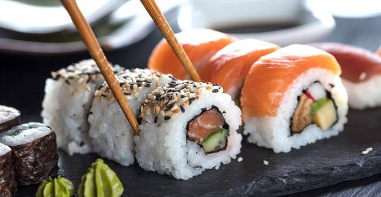

Sushi is a staple dish of Japanese cuisine consisting of specially prepared vinegared medium-grain rice combined with various ingredients like seafood and vegetables. The word itself refers to the sour flavor of the rice. Though often associated with raw fish, it ranges from vegetarian rolls to cooked and marinated options.